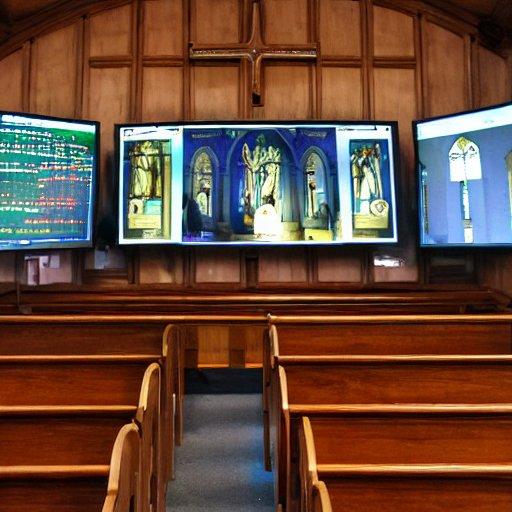

About Project

みなさんはこの冬の季節に街中でクリスマスソングを歌う子供たちを見たことがあるでしょうか。これはクリスマスキャロリングと言って、クリスマスに子供たちが街で讃美歌を歌い、寄付を求めるというイベントです。
これはキリスト教と欧州の文化圏で広く行われてきたイベントで、数百年の歴史の中にあります。
また近年、DX(デジタルトランスフォーメーション)という言葉と共にさまざまなことが効率化されつつあります。これによって、仕事や暮らしなど、さまざまなものがデジタルと共に移り変わり、新しいものへと生まれ変わっていきました。その中で宗教だけが人々の心の核にあるものとして、まだ触れられていないのではないかと考えています。この数百年続く歴史の中、人々の心の核にある宗教、そしてここ数十年で急速に力を持ち始めたデジタル、これらの交差点には誰が立っているのでしょうか。